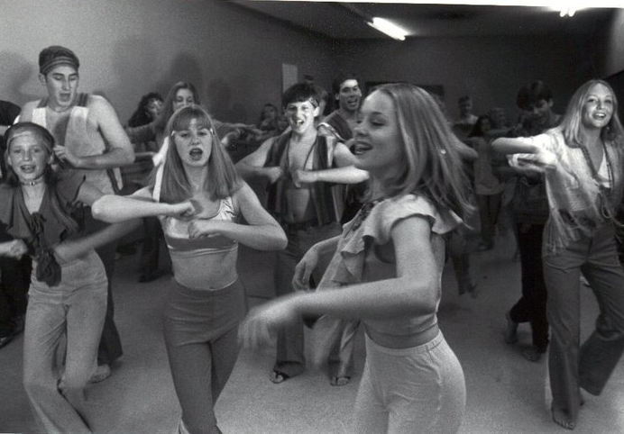
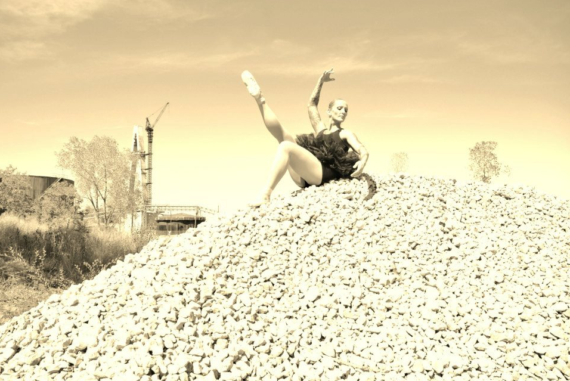
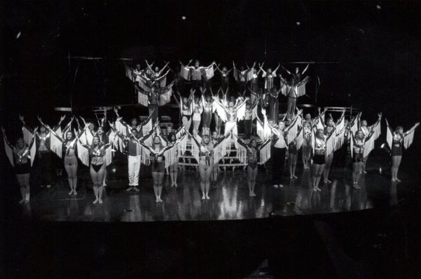
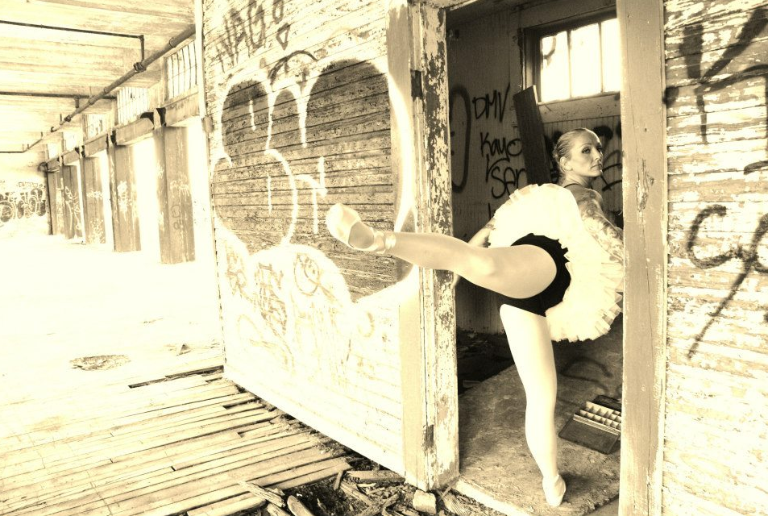
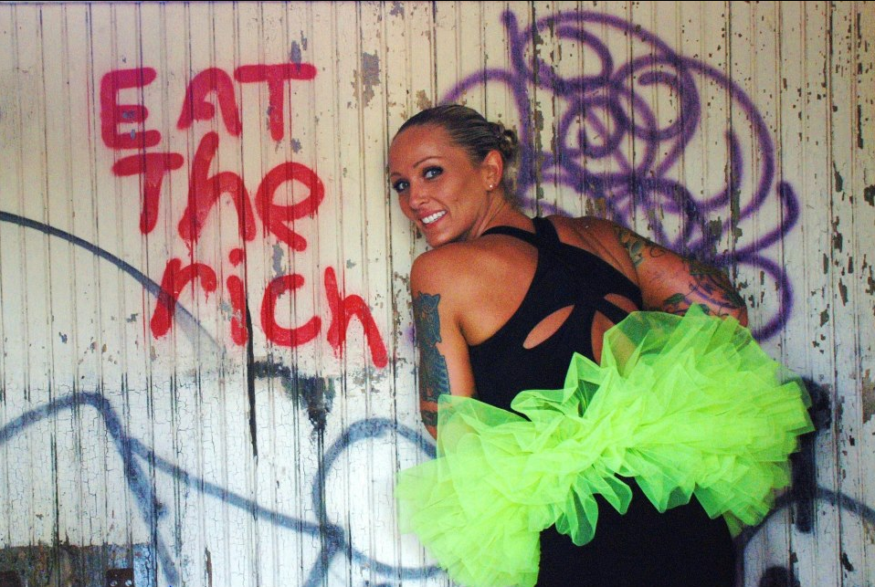

Friendships of a Lifetime
Dancers spend long hours together perfecting routines, learning as a team to be in sync, and performing side by side. We learn about responsibility, trust, and respect; and we are there for eachother in high pressure situations like auditions or show times. We see eachother, and encourage eachother, at our worst and our best. The dance world gives us the opportunity to create solid bonds that last a lifetime.

Body and Brain Awareness
Dance is great for a top-to-toe workout, but there's more to it! Besides increasing strength, flexibility, and stamina, dance benefits the brain, lungs, heart, and bones. It's a marriage of collecting information by the brain and then processing through the sensory systems to manifest an understanding of the body. Consequently, body awareness is the foundation for all other motor skill development. Dance provides physical confidence and boosts mental and emotional strength.

Dance is Hard
This time-tested art form builds resilience and determination. Despite failed attempts at fouettés, dancers keep working until they can not get it wrong. Dance dishes out a few slices of humble pie, but the end result is a healthy dose of self-respect, self-esteem, and self-confidence. In turn, dance can actually help to handle peer pressure, attain good grades in school, cope with emotions, and countless other scenarios as we grow to be successful within our community.

Power through Movement
Anything that needs to be said can be expressed through movement. A small reach can indicate a question. A strong kick can demonstrate passion or anger. Each movement can replace words and provide another channel for expression. There's power in movement and dance can help us feel and act on that power. Through dance, we can connect with others and with ourselves. The body can do all the talking.

Shall We?
Aside from the seriously amazing benefits of emotional expression, mental balance, and physical fitness, dance is fun! Dance is a way to let loose and be our unique selves. When dancers are asked why they do it, each answer may differ. Perhaps the better question would be:
"Why would we not dance?"
